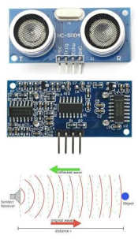
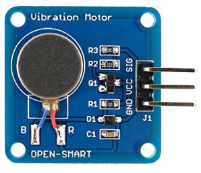

Slepe i slabovide osobe imaju potrebu za asistencijom u kretanju samo kada se nalaze u nepoznatom okruženju, odnosno kada izlaze izvan komforne zone sopstvenog doma.
Zbog toga smo se rukovodili idejom da osmislimo proizvod koji će im olakšati kretanje u takvim uslovima.
Proizvod SIXTH SENSE je baziran na principu Doplerovog efekta, odnosno, na istom onom prirodnom principu koji koriste slepi miševi u letu.
Sam uređaj se sastoji od sledećih komponenata:
- HC-SR04 ultrazvučnog senzora,
- Dva vibraciona motora koji se u ovom slučaju koriste za signalizaciju prepreka,
- Programabilnog Arduino nano v3 uređaja čijim se programiranjem uređaj može prilagođavati svakom korisniku ponaosob.
- Punjive baterije za napajanje koja omogućava potpunu autonomnost uređaja.
HC-SR04 ultrazvučni senzor koristi SONAR da odredi udaljenost objekta kao što to rade slepi miševi. Nudi odličnu detekciju opsega (bez kontakta) sa visokom tačnošću i stabilnim očitavanjima u opsegu od 2 cm do 400 cm. Rad senzora se odvija bez uticaja sunčeve svetlosti ili crnog materijala, ali se meki materijali (kao što je tkanina) mogu teško detektovati.
 
Modul poseduje i ultrazvučni predajnik i ultrazvučni prijemnik. Vibracioni motor je motor koji vibrira kada ima dovoljnu snagu. U ovom slučaju koristimo dva motora za signalizaciju prepreka napred levo i napred desno. Za podešavanje rada ultrazvučnog senzora opredelili smo se za korišćenje Arduino nano uređaja. Razlozi koji su nas naveli na ovakvu odluku su, pre svega, praktične prirode i vođeni su idejom da sam uređaj bude lakši i manjih dimenzija, kako ne bi za korisnika predstavljao opterećenje.
Arduino nano je dimenzija 43.18 mm x18.54 mm što omogućava i korišćenje kutije manjih dimenzija za smeštanje samog elektronskog sklopa uređaja. Napajanje Arduino nano uređaja obavlja se preko USB priključka što takođe olakšava korisniku upotrebu proizvoda Sixth sense, pošto je moguća dopuna baterije na bilo kom računaru.
Programiranje Arduino nano uređaja se radi u programu scketch tsm3.ino.
Fabričko podešavanje proizvoda Sixth sense je urađeno tako da uređaj radi na sledeći način:
- Ukoliko je rastojanje prepreke manje ili jednako 50cm tada se tri puta naizmenično uključuju motori, pa se napravi dodatna pauza od 0,05 sekundi.
- Ukoliko je rastojanje prepreke manje ili jednako 100cm tada se dva puta naizmenično uključuju motori, pa se napravi dodatna pauza od 0,15 sekundi.
- Ukoliko je rastojanje prepreke manje ili jednako 200cm tada se jednom naizmenično uključuju motori, pa se napravi dodatna pauza od 0,4 sekunde.
- Ukoliko je rastojanje prepreke manje ili jednako 300cm tada se jednom naizmenično uključuju motori, pa se napravi dodatna pauza od 0,6 sekundi.
Na ovakav način otkrivamo prepreke ispred senzora na rastojanju do 3 metra. Treba napomenuti da je izmenom programskog koda moguće promeniti ritam uključenja i isključenja motora čime se omogućava prilagođavanje uređaja zahtevima svakog korisnika.
Kao izvor napajanja koristićemo eksternu bateriju (za mobilne uređaje). Izbor baterija je veliki. Prilikom izbora baterije rukovodili smo se ponovo dimenzijama kako naš proizvod ne bi predstavljao opterećenje za korisnika.
Na kraju treba napomenuti da su svi uređaji koji se koriste za izradu proizvoda SIXTH SENSE reciklabilni čime se izlazi u susret zahtevima svih konvencija o zaštiti životne sredine.
Na elektronske komponente proizvoda (izuzev baterije) dajemo garanciju u trajanju od 48 meseci.